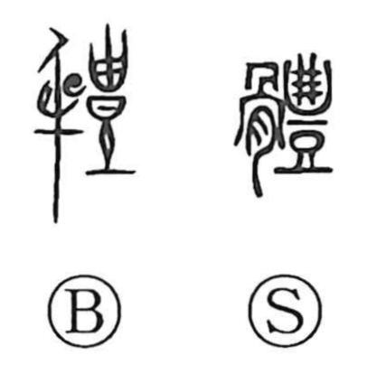

体

Kun: karada, katachi | On: tai, tei
body ・ form ・ shape
Explanation
Originally written 體, the character combines the bone element with 豊 as a phonetic, making it a phono-semantic compound. 豊 serves as the on-reading indicator, and within the old phonological correspondences an initial l-series manifests as a t-series in Sino-Japanese, which explains the readings tai/tei (a pattern also seen in words like 頼 and 留). In the Zhou Rites, Inner Cooking section, 體 refers to the sacrificial body whose limbs and flesh are distinguished and prepared; from this ritual sense of the offering’s body, the meaning broadened to the human body and, more generally, to one’s outward form or shape.